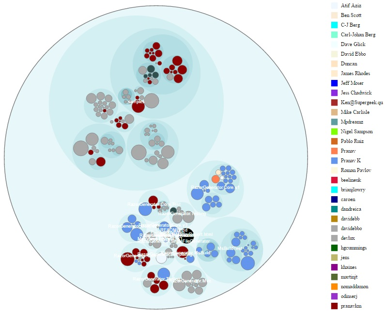

Projects
Mapping Generator 🔗︎
“AutoMapper” like, Roslyn based, code fix provider that allows to generate mapping code in design time.

- Article: Generate mapping code with Roslyn code fix provider.
- Repository: cezarypiatek/MappingGenerator
- Nuget: MappingGenerator
- Visual Studio Extension: MappingGenerator
CsharpMacros 🔗︎
A simple template base system of macros for C# that can be executed in design time.
- Article: CSharp Macros - let the Roslyn type for you
- Repository: cezarypiatek/CsharpMacros
- Nuget: CsharpMacros
- Visual Studio Extension: CsharpMacros
Tellurium 🔗︎
A utility pack to create maintainable and reliable UI tests using Selenium with additional support for ASP.NET MVC projects.
- Repository: cezarypiatek/Tellurium
- Nuget: Tellurium.MvcPages, Tellurium.VisualAssertions, Tellurium.SeleniumDriverInstaller
VanillaTransformer 🔗︎
VanillaTransformer is a simple generic text file transformer. It was designed for configuration transforming as an alternative for XML-Document-Transform tool. Unlike XML-DT, it works with any kind of text file (not only XML) and is much simpler to use.
- Repository: cezarypiatek/VanillaTransformer
- Nuget: VanillaTransformer
DDDToolbox 🔗︎
A set of Roslyn refactorings supporting DDD design.

- Repository: cezarypiatek/DDDToolbox
- Visual Studio Extension: DDDToolbox
MultithreadingAnalyzer 🔗︎
A set of Roslyn analyzers related to multithreading.
- Article: Avoid multithreading traps with Roslyn: Lock object selection, Avoid thread synchronization problems with Roslyn: Synchronization primitives traps
- Repository: SmartAnalyzers/MultithreadingAnalyzer
- Nuget: SmartAnalyzers.MultithreadingAnalyzer
ExceptionAnalyzer 🔗︎
A set of Roslyn analyzers related to exceptions usages.
- Article: Exception usage analyzer
- Repository: SmartAnalyzers/ExceptionAnalyzer
- Nuget: SmartAnalyzers.ExceptionAnalyzer
Project Graphs 🔗︎
PowerShell module to draw a graph of c# projects dependencies. It can also spot some kind of issues with libraries and nuget packages references (for example: multiple version of the same library\package).

- Repository: cezarypiatek/ProjectGraphs
Code Topology 🔗︎
Tool to visualize your codebase 
{kind=link}
- Repository: synergy-software/CodeTopology
DependencyGraph 🔗︎
A small F# application to visualize .net assembly dependencies.

- Repository: cezarypiatek/dependencygraph